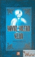

Büyük Türk "Fenomeni" Yavuz Sultan Selim'in bibriyografisi. Anlatmaya gerek yok ecdad yapmış be abi. Okulda öğretilen tarihte bizlere zaferlerin ne kadar kolay ve çabuk olduğunu öğreniyorduk. Ancak hiç bir zafer çalışılmadan, yorulmadan ve çabalamadan kazanılmadığını bu kitapta öğreniyoruz. Az zaman da çok iş başaran büyük Türk Padişahı Yavuz Sultan Selim'in hayatı okunması gereken bir kitap. Kitaptan bir not iletmek istiyorum. "Bir Türk için, Fatih(Sultan Mehmet)'in sevdiği her şey kutsaldır." Arka Kapak Bilgisi: Yavuz Sultan Selim adlı bu kitap, şaşırtıcı işler yapan bir fenomen'in biyografisidir. Sekiz yıllık kısa saltanatında dünya siyaseti açısından kalıcı fetihler gerçekleştiren, Orta Doğu'nun gelecek asırlardaki durumunda belirleyici olan, bugünkü Türkiye'nin Anadolu sınırlarını çizen ve Yılmaz Ã?ztuna'nın dünya tarihini mimarlarından biri olarak tanımladığı bir sultanın hayat hikayesi..
Yorumlar !